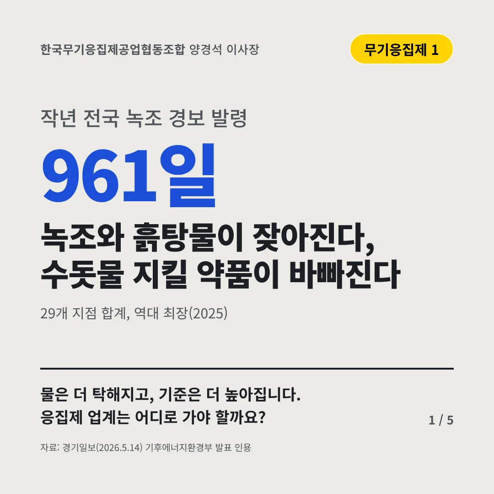
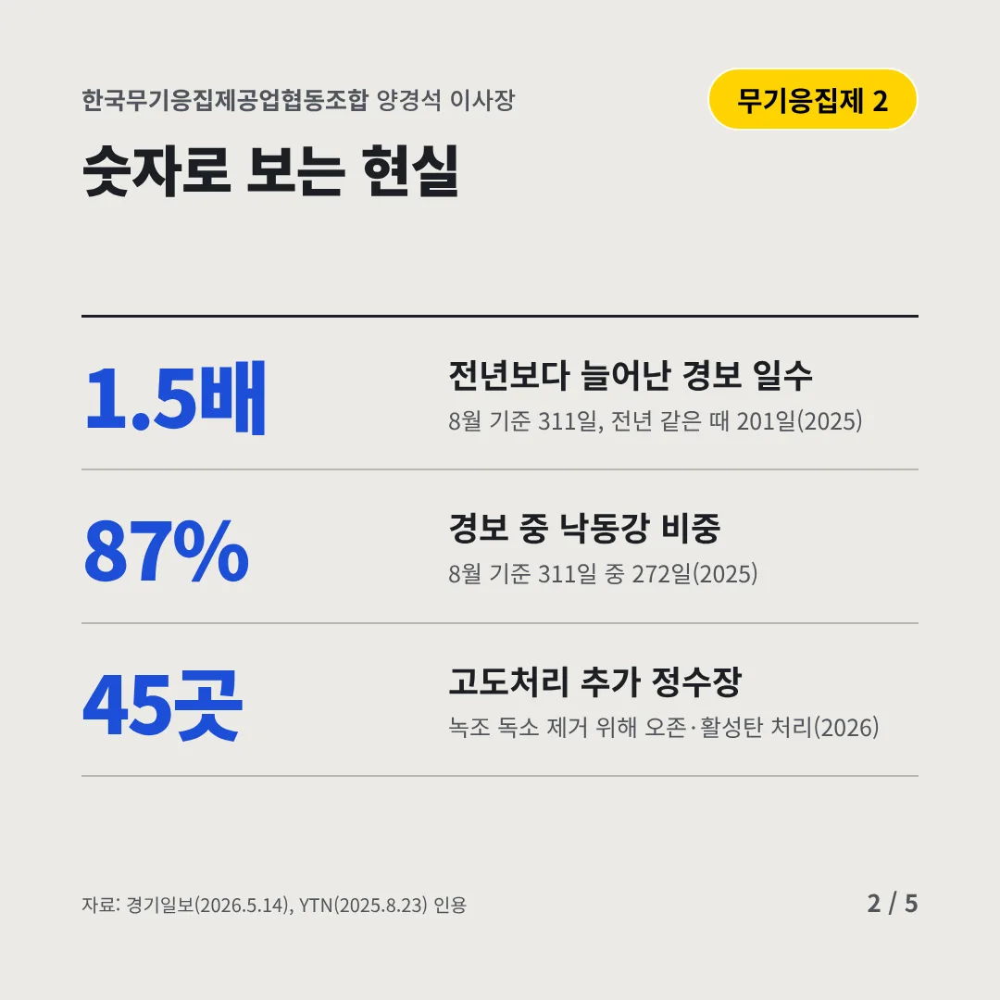
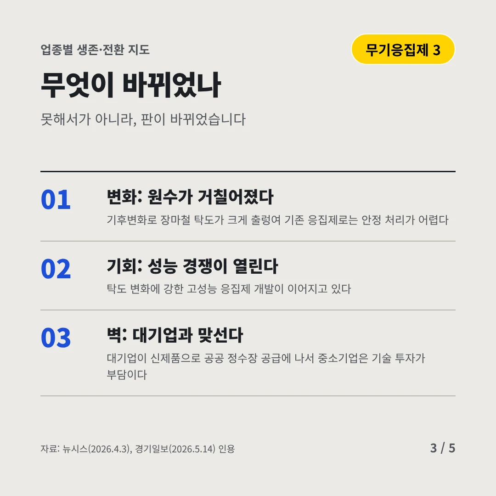
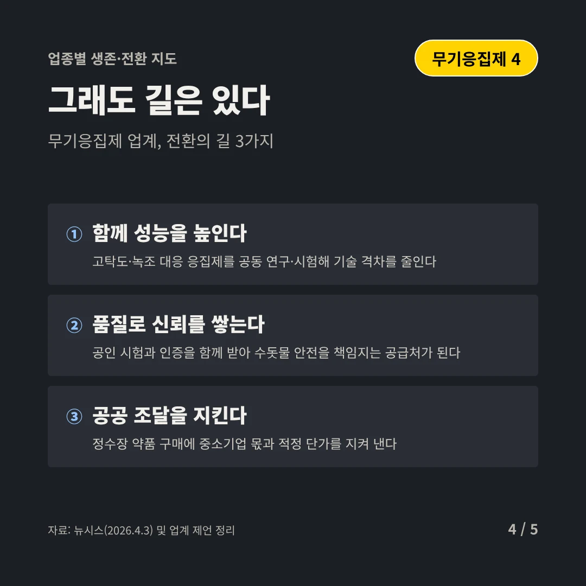
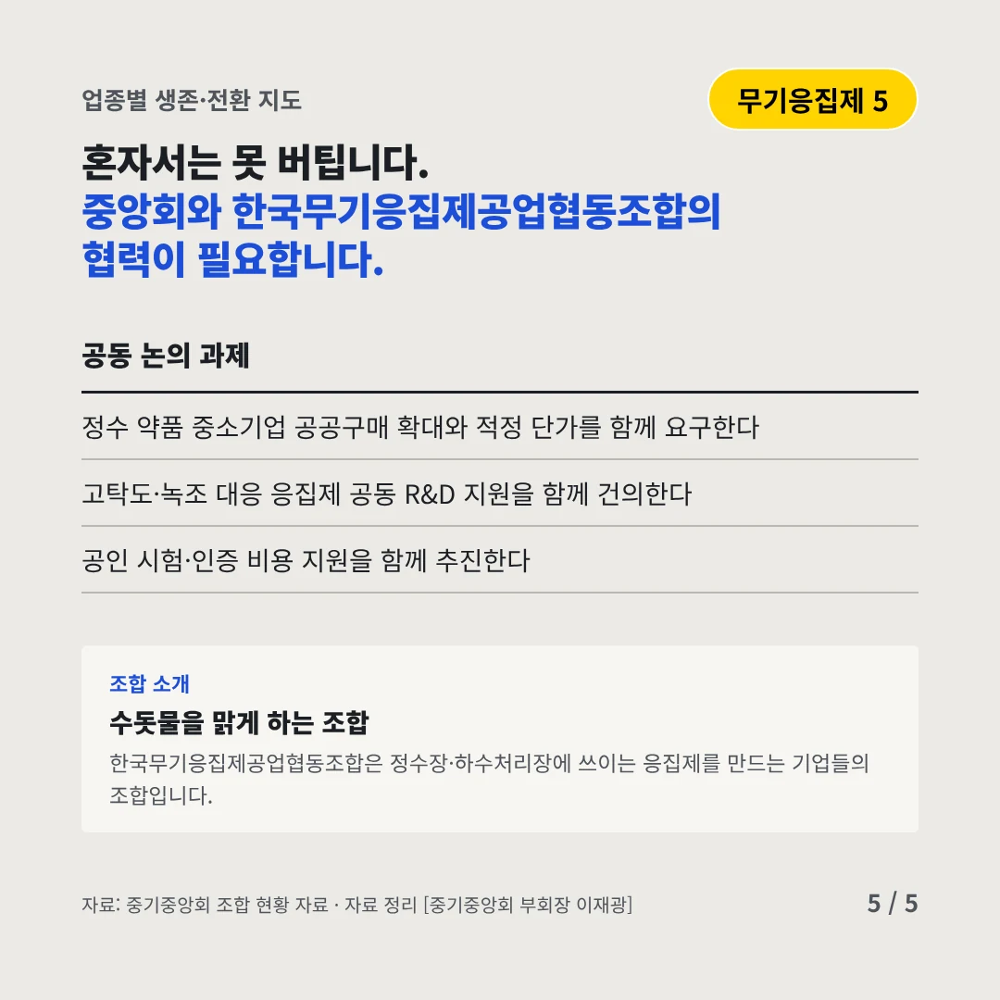
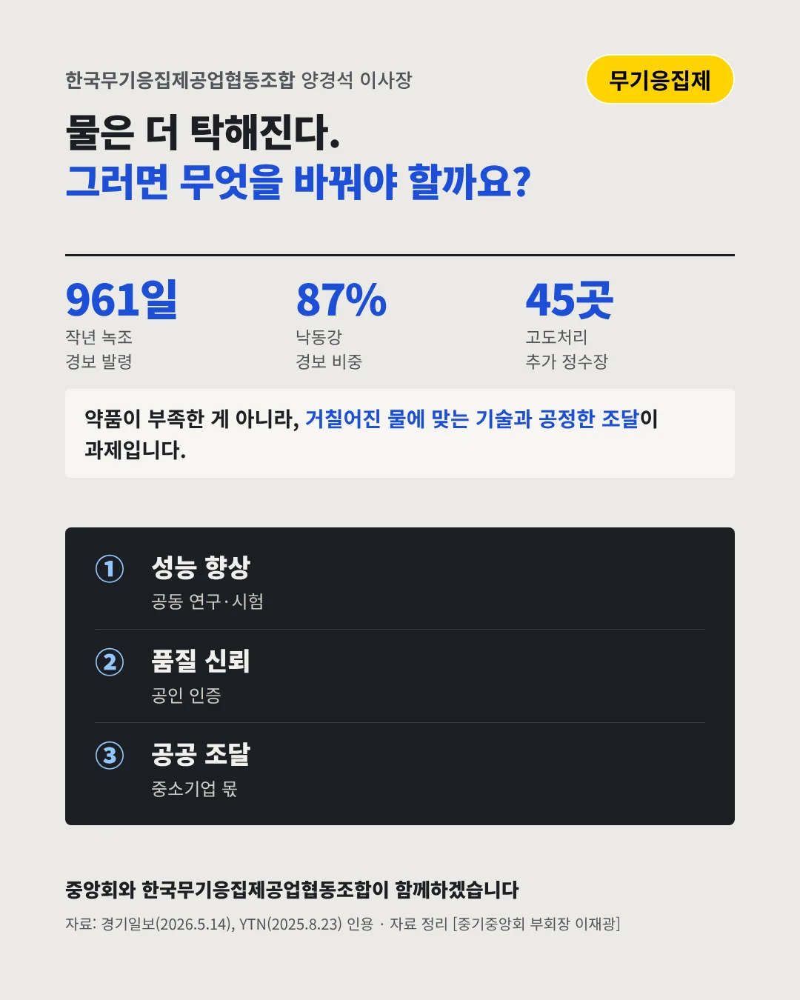

한국무기응집제공업협동조합
녹조와 흙탕물이 잦아진다, 수돗물 지킬 약품이 바빠진다
961일 작년 전국 녹조 경보 발령






물은 더 탁해지고, 기준은 더 높아집니다. 응집제 업계는 어디로 가야 할까요?
숫자로 보는 현실
- 1.5배전년보다 늘어난 경보 일수8월 기준 311일, 전년 같은 때 201일(2025)
- 87%경보 중 낙동강 비중8월 기준 311일 중 272일(2025)
- 45곳고도처리 추가 정수장녹조 독소 제거 위해 오존·활성탄 처리(2026)
무엇이 바뀌었나
- 변화: 원수가 거칠어졌다기후변화로 장마철 탁도가 크게 출렁여 기존 응집제로는 안정 처리가 어렵다
- 기회: 성능 경쟁이 열린다탁도 변화에 강한 고성능 응집제 개발이 이어지고 있다
- 벽: 대기업과 맞선다대기업이 신제품으로 공공 정수장 공급에 나서 중소기업은 기술 투자가 부담이다
그래도 길은 있다
- 함께 성능을 높인다고탁도·녹조 대응 응집제를 공동 연구·시험해 기술 격차를 줄인다
- 품질로 신뢰를 쌓는다공인 시험과 인증을 함께 받아 수돗물 안전을 책임지는 공급처가 된다
- 공공 조달을 지킨다정수장 약품 구매에 중소기업 몫과 적정 단가를 지켜 낸다
한 장 요약

조합 소개
한국무기응집제공업협동조합은 정수장·하수처리장에 쓰이는 응집제를 만드는 기업들의 조합입니다.
자료: 경기일보(2026.5.14), YTN(2025.8.23), 뉴시스(2026.4.3)